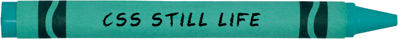
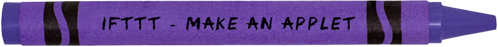

Project 1-1
×
This is an art of emojis.
If you want to see what could be done with emojis, click
here.
Project 1-2
×
Capture the moment and paint it with CSS.
Let's draw different objects with CSS functions.
If you want to see what I've drawn, click
here!
Project 1-3
×
Welcome to Hajoon's Gallery!
This is a small gallery of Hajoon's handdrawings with a little bit of surprises.
If you want to explore more, click
here!
Project 2-1
×
This is a webring of DSGN 1020 students in 2023S.
You can visit other folks' websites through our webring connected through icons.
Find an icon to other website
here!
Project 2-2
×
Please let the little kittens see the Whole New World.
Click
here
to give them magical experience.
Project 2-3
×
Clocks are boring.
NO. They are not.
Take a look at the clock that changes its color every second
here
Project 3-1
×
Everyone can be a writer.
Everyone can be a programmer.
So I decided to be both
here
Project 3-2
×
Looking for a restaurant for special occastion?
I don't want to miss a single day, so we designed this app.
Check our BABE
here
.
Project 3-3
×
Sugar alert!
I love Dippin' Dots, so I decided to make my own Dippin' Dots generator.
Grab as many Dots as you want
here
.